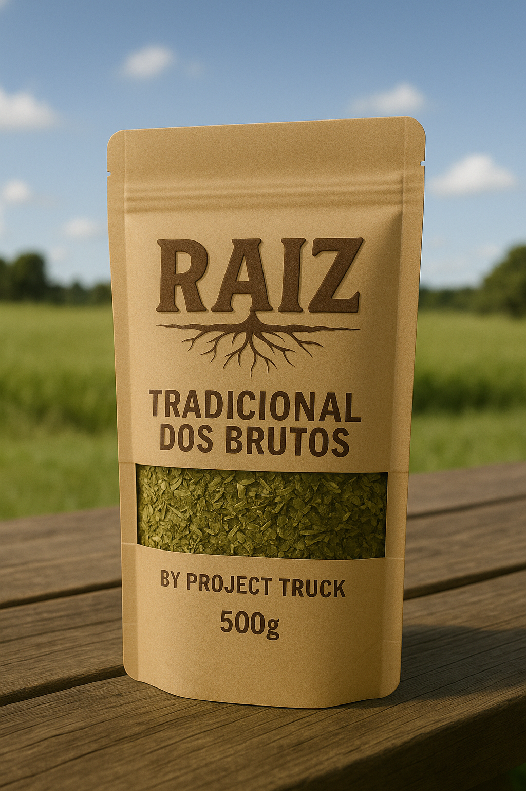
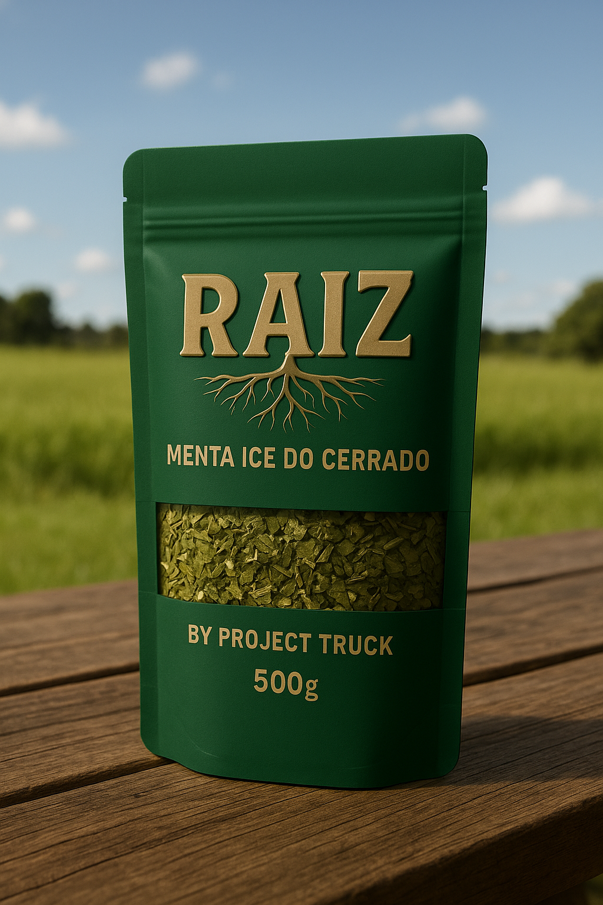

Respira fundo, puxa o tereré e bora pra lida.
Bem-vindo à linha RAIZ — um tereré bruto, original e sem frescura, pra quem vive de verdade.
Escolha do nome: RAIZ
RAIZ representa mais do que a erva-mate. É um estilo de vida que honra a tradição, a força do campo e a conexão com a lida. É pra quem pega estrada de botina e cuia na mão.

Tradicional dos Brutos - 500g
Erva-mate pura folha, moagem grossa, sabor original, 100% natural, 0% frescura!
"Na estrada, na roça ou no asfalto: a energia vem da cuia."

Menta Ice do Cerrado - 500g
Blend refrescante com folhas de menta selecionadas. Leve, marcante e revigorante.
"Respira fundo, puxa o tereré e bora pra lida."Sobre a Project Truck
A Project Truck nasceu da paixão por caminhonetes, estilo de vida off-road e simplicidade do campo. Com mais de 100 mil seguidores no Instagram, virou símbolo de autenticidade e vida na lida.
